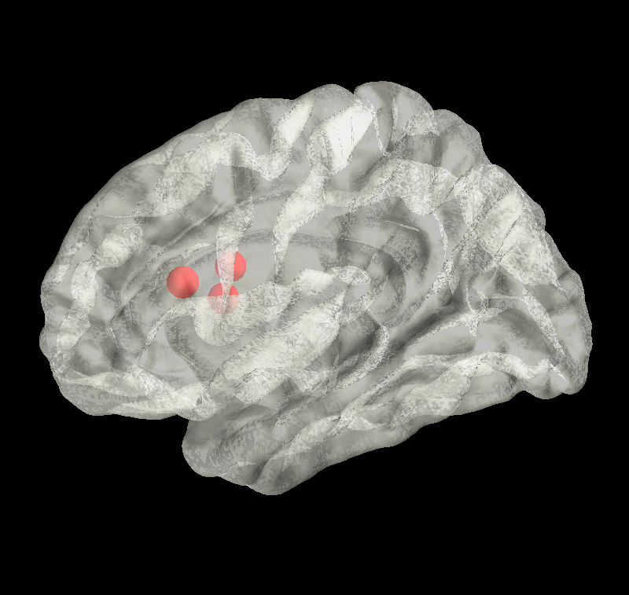

Plot Transparent Brain¶
Plot a transparent brain to visualize foci below the surface.
Python source code: plot_transparent_brain.py
import os
from surfer import Brain
print(__doc__)
subject_id = "fsaverage"
subjects_dir = os.environ["SUBJECTS_DIR"]
"""To render a transparent brain, we are specifying an alpha <
1.0. This allows us to visualize foci that are not on the cortical
surface. When the brain see-through, rendering of binary curvature is
distracting, so we specify a color, rather than a color map as the
argument for cortex:
"""
brain = Brain(subject_id, "lh", "pial", cortex='ivory', alpha=0.5)
"""Here's a set of stereotaxic foci in the MNI coordinate system that
are not on the cortical surface which we want to display.
"""
coords = [[-20, 10, 10],
[-25, 22, 15],
[-18, 8, 20]]
"""Now we plot the foci in the brain. Because the foci are not on the
cortical surface, they are only visible when alpha is set to < 1.0 in
the call to Brain.
"""
brain.add_foci(coords, color="red")